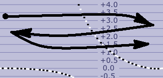

The upper graph on this page is the Tuning Curve, which graphs the TCurve offset from the main tuning page. If you select the zoom mode with the button shown on the left, then you can scroll and two-finger zoom the tuning curve graph. You can also tap and hold (long-press) the zoom mode button to select what you would like the graph to display. You will be presented with the following menu:
The Inharmonicity graph uses black to indicate actual inharmonicity
measurements and red to indicate projected inharmonicity based on those
measurements.
If you select the detail mode with the button
shown on the right, then you can view the offset and partial selection for
any note. Just swipe across the graph until you get the note
you want. The graph is drawn with white and black notes dots
representing the black and white keys of the piano keyboard to make this
easier. If you tap on the adjust button shown here as a wrench, then you can change the settings
that determine the tuning curve. Tap-and-hold (long-press) the
adjust button to use 3-part tuning or to return
to the old 2-part tuning that was used before 2020. The use of 3-part
tuning is recommended for all new tunings.
The interval select button shown here shows what intervals are displayed in the Deviation Curve, which is the lower graph. The upper interval (4:1 in the example here) is for the treble and the lower one (6:3 in the example) is for the bass. The Deviation Curve is for diagnostic purposes only. On the right side of the graph it shows how wide or narrow the treble interval will be, according to the models for inharmonicity. And the left side of the graph shows how wide or narrow the bass interval will be. Under 3-part tuning, that is its sole purpose. It does not affect the tuning. The selection of these intervals are totally separate from the specification of intervals in the 3-part tuning settings.
You can scroll and two-finger zoom the Deviation Curve at any time. The Deviation Curve normally shows cents. But it can also show beats. To switch to or from beats, swipe the Deviation Curve with a "Z-shaped" gesture

that starts near the left edge, moves to the right edge, then back to the left edge, and finally back to the right edge. Then lift your finger. The background of the Deviation Curve will be reddish in color when beats are being displayed.